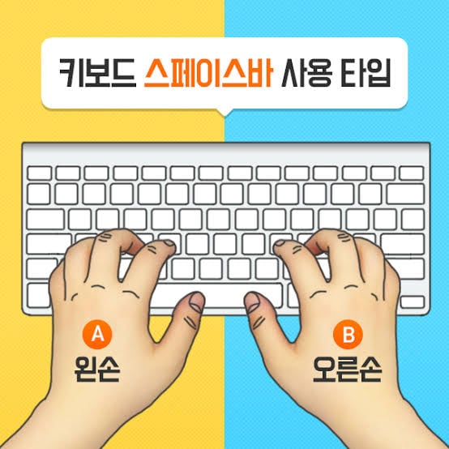
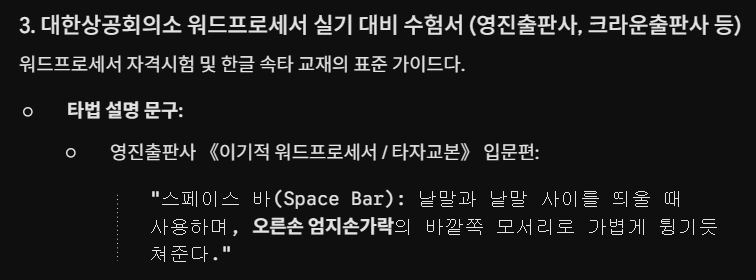
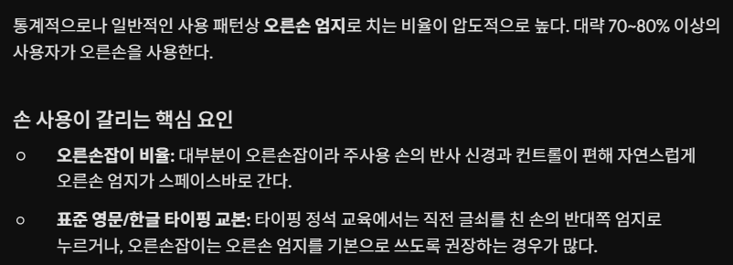

키보드 스페이스바 누르는 손
과거 1800년대 타자기 시절에는 교본상 우측 엄지로 누르라고 가르쳤고
현재도 우측 엄지로 누르는 사람이 많지만
FPS나 롤 등의 게임 플레이어들이 많아지면서 점차 왼손으로 스페이스바를 누르는 경우가 잦아지고 있다고 함
개붕이들은 타이핑칠때 스페이스바 어느 손으로 누름?



키보드 스페이스바 누르는 손
과거 1800년대 타자기 시절에는 교본상 우측 엄지로 누르라고 가르쳤고
현재도 우측 엄지로 누르는 사람이 많지만
FPS나 롤 등의 게임 플레이어들이 많아지면서 점차 왼손으로 스페이스바를 누르는 경우가 잦아지고 있다고 함
개붕이들은 타이핑칠때 스페이스바 어느 손으로 누름?
난 스페 항상 왼손인듯
왼손 엄지 고정임
오른손은 마우스 써야되니 왼손이지
타자치는데 마우스를 왜 써
마우스 쓸때 왼손으로하니 익숙한걸로 한다는뜻임
헐 투표결과 충격적이네ㅋㅋㅋㅋㅋㅋㅋ난 무의식 오른손인데 심지어 롤도 오래했음
나방금 처봤는데 오른손이네 ㅋㅋ
당연 왼손일줄알았는데 케릭터 점프할때 많이쓰니까
fps 게임 하다보니 왼손으로 고정된 거 같음
난 왼손. 평소에도 왼손잡이임.
둘다쓰는데
왼손을 주로 쓰는데 그냥 꼴리는대로임
헐 나도 fps랑 와우 할때 왼손으로 누르니 당연 왼손으로 누른다고 생각했는데
타자 칠때는 오른손으로 치고 있네
fps나 3D게임에서 점프가 스페이스인 경우가 많아서 왼손으로 고정 됨
게임할때말고 타이핑시!!!!!!!!!!!!!
그때그떄 다르네,,, 두손 타자칠때는 난 오른손 쓰네
둘다
스페이스 누르기 직전 손에 따라서 다르네 마지막으로 친 손으로 누르게 된다...